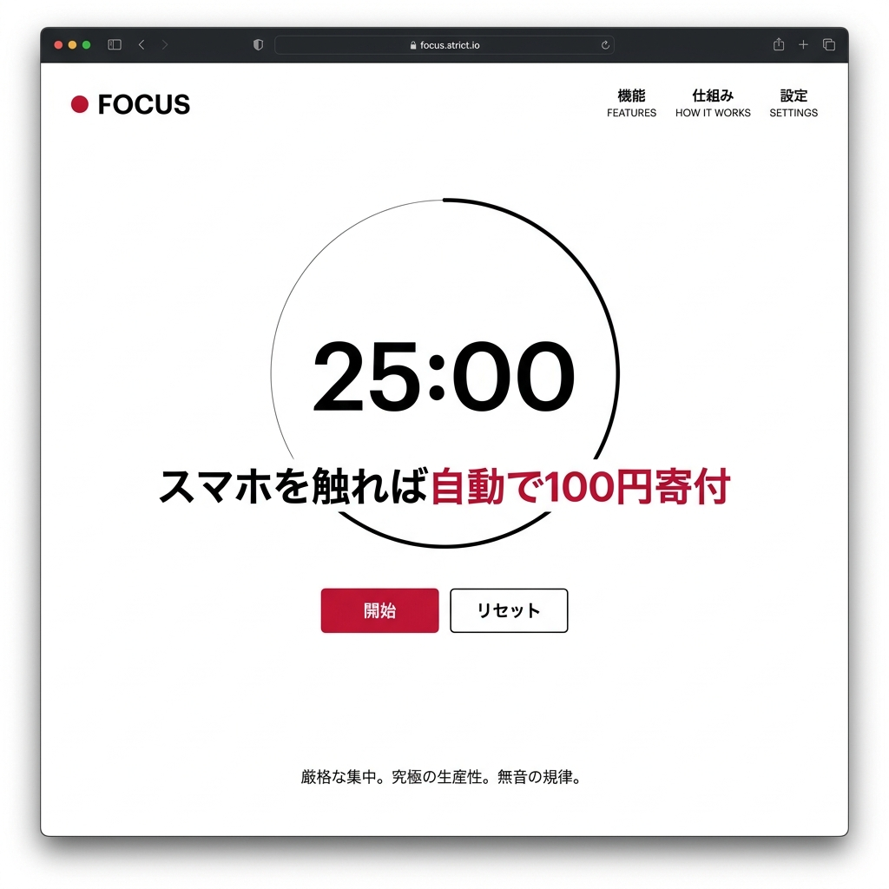

experimental
究極の集中。スマホを触れば、
究極の集中。スマホを触れば、
自動で「100円」没収。
試験勉強や締め切り前。ついついスマホを見てしまい、気づけば1時間が溶けている。「気合い」や「スクリーンタイム制限」ではもう自分を止められない、意志の弱いあなたへ。

強制的な無音の規律
ポモドーロ（25分）をセットしてスマホを裏返します。途中で持ち上げたり、他のアプリを開くと、即座にクレジットカードから100円が引き落とされます。
没収金は全額寄付
あなたが集中を乱して支払ったペナルティは、非営利の教育支援団体へ自動的に寄付されます。「無駄遣い」にはなりません。
ストイック・ダッシュボード
「自分がどれだけ集中できたか」「どれだけスマホの誘惑に負けて寄付したか」を容赦なくグラフ化。